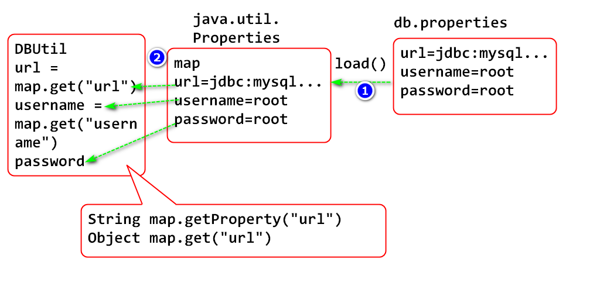
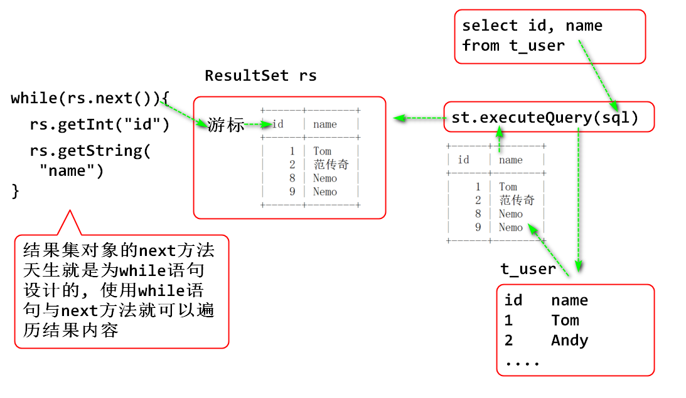
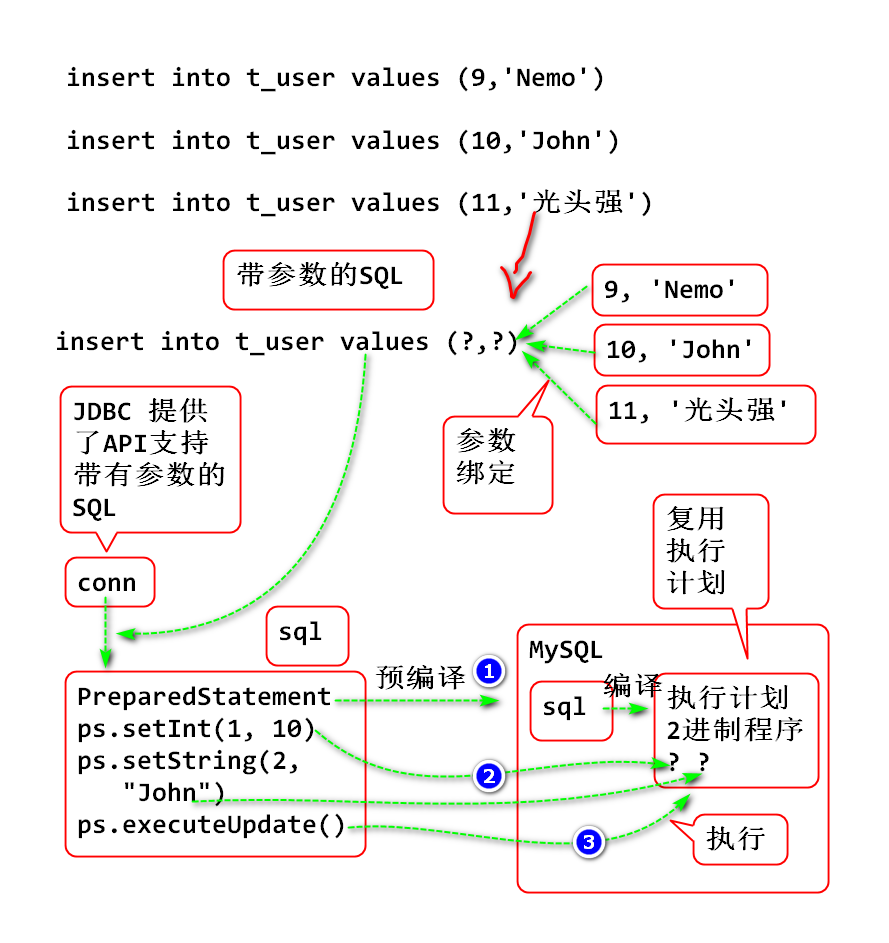
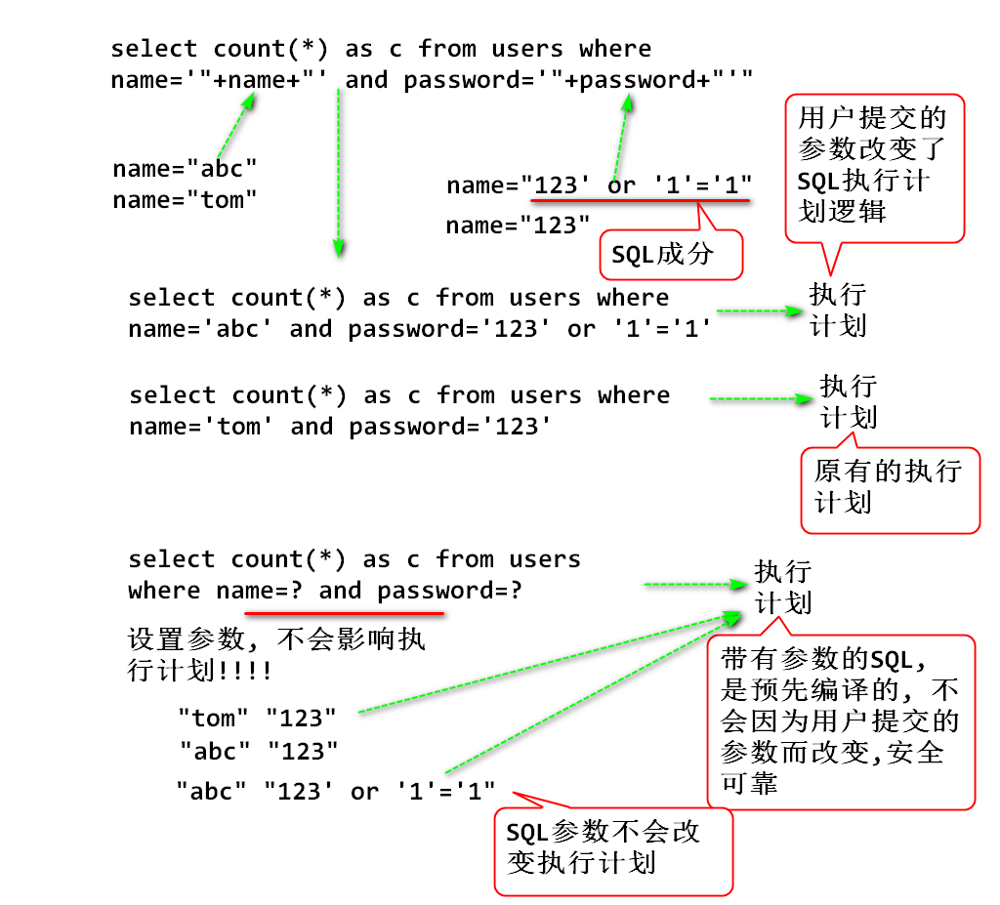
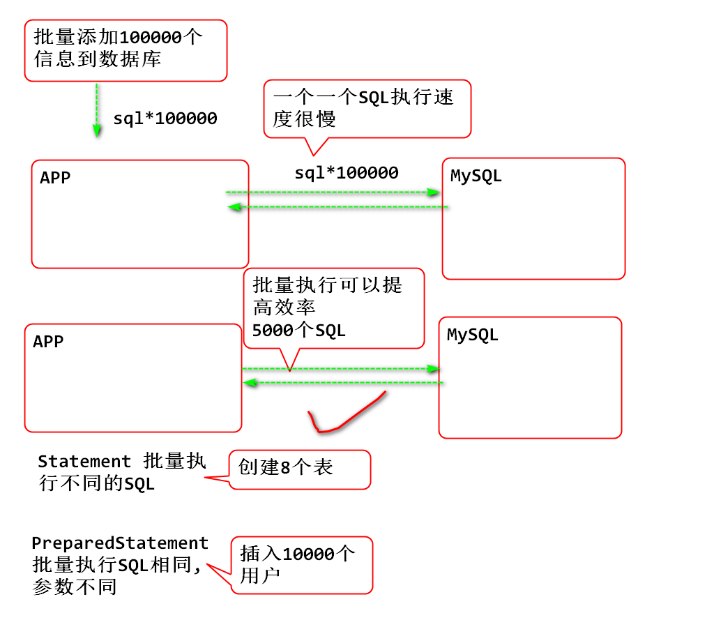

数据完整(有效性)检查.
使用JDBC的步骤:
导入注册JDBC驱动
Class.forName(驱动程序名)
创建数据库连接
Connection conn = DriverManager.getConnection(url, name, pwd);
创建 Statement 对象, 用来执行SQL
执行SQL
Java 提供一套配置文件API, 可以解决软件的参数配置文件问题.
原理为:

使用步骤:
在resource文件夹中创建配置文件 db.properties
driverClass=com.mysql.jdbc.Driver
url=jdbc:mysql://localhost:3306/db6?characterEncoding=utf8&useUnicode=true&useSSL=false
username=root
password=root
编写测试类读取配置文件
public class PropertiesDemo02 {
public static void main(String[] args)
throws Exception {
/**
* 利用Properties API 读取配置文件db.properties信息
*/
//利用当前的classLoader 加载resource中的资源
String file="db.properties";
//固定写法:
// 类名.class.getClassLoader().getResourceAsStream()
InputStream in=PropertiesDemo02.class
.getClassLoader()
.getResourceAsStream(file);
Properties cfg = new Properties();
//将资源中信息读取到 Properties 对象中
cfg.load(in);
in.close();
//检查读取结果
System.out.println(cfg);
//获取一个参数
System.out.println(cfg.getProperty("url"));
System.out.println(cfg.get("url"));
}
}
读取在resource文件夹中的经典操作是 类名.class.getClassLoader().getResourceAsStream()
测试.
利于工具类封装数据库连接过程, 可以重用数据库连接功能, 简化JDBC编程.
编写DBUtil封装数据库的连接和关闭过程:
/**
* 抽取封装数据库连接/关闭过程, 用于简化数据库编程
*/
public class DBUtil {
private static String driverClass;
private static String url;
private static String username;
private static String password;
static {
try {
//利用静态代码块初始化静态属性
String file="db.properties";
//configuration:配置信息, 缩写为 cfg
Properties cfg=new Properties();
InputStream in =DBUtil.class.getClassLoader()
.getResourceAsStream(file);
cfg.load(in);
in.close();
driverClass = cfg.getProperty("driverClass");
url = cfg.getProperty("url");
username = cfg.getProperty("username");
password = cfg.getProperty("password");
}catch(IOException e) {
e.printStackTrace();
throw new RuntimeException(e);
}
}
/**
* 封装数据库连接过程, 返回数据库连接对象
* @return 数据库连接对象
* @throws Exception 如果数据库驱动无法注册, 则抛出异常
* 不能连接到数据库
*/
public static Connection getConnection()
throws Exception {
//将数据库驱动程序类名也放到配置文件中
Class.forName(driverClass);
Connection conn = DriverManager.getConnection(
url, username, password);
return conn;
}
/**
* 关闭数据库连接方法
* @param conn 被关闭的数据库连接
*/
public static void close(Connection conn) {
//如果数据库在关闭期间出现意外, 是无需处理的异常
//可以直接忽略!
try {
//检查conn对象是否为null, 避免空指针异常!
if(conn!=null) {
conn.close();
}
}catch(SQLException e) {
e.printStackTrace();
}
}
}
重构插入功能:
public class InsertDemo01 {
public static void main(String[] args) {
/**
* 向数据库插入数据
*/
String sql="insert into t_user values (9,'Nemo')";
Connection conn=null;
try {
//利用数据库连接工具连接到数据库
conn=DBUtil.getConnection();
//创建Statement对象
Statement st = conn.createStatement();
//执行SQL
int n = st.executeUpdate(sql);
//处理结果
System.out.println(n);
st.close();
//st对象可以不关闭, conn关闭时候会自动关闭st对象
}catch(Exception e) {
e.printStackTrace();
}finally {
//可靠关闭数据库的连接!!!
DBUtil.close(conn);
}
}
}
测试.
使用executeQuery方法可以执行查询语句, 得到结果集对象ResultSet
结果集对象的读取原理:

案例, 查询数据表:
public class SelectDemo03 {
public static void main(String[] args) {
/**
* 演示JDBC查询功能
*/
String sql="select id, name from t_user";
Connection conn = null;
try {
conn = DBUtil.getConnection();
Statement st=conn.createStatement();
//Result结果, Set集, 结果集对象封装了查询结果
ResultSet rs=st.executeQuery(sql);
//利用while和next方法配合移动 "结果集游标"
while(rs.next()) {
//读取rs当前行中的数据
int id = rs.getInt("id");
String name=rs.getString("name");
System.out.println(id+","+name);
}
rs.close();//可以不关闭rs, conn关闭时候自动关闭rs
st.close();
}catch (Exception e) {
e.printStackTrace();
}finally {
DBUtil.close(conn);
}
}
}
预编译的SQL语句的工作原理:

好处:
重要: SQL拼接时候, 不要拼接用户提交的字符串!!!!
插入案例:
public class InsertDemo04 {
public static void main(String[] args) {
/**
* 测试有参数的插入语句
*/
System.out.println(addUser(10, "Jerry"));
System.out.println(addUser(11, "熊大"));
System.out.println(addUser(12, "熊二"));
}
public static int addUser(int id, String name) {
//update t_user set name=? where id=?
String sql="insert into t_user (id, name) "
+ "values (?,?)";
Connection conn = null;
try {
conn = DBUtil.getConnection();
//发送SQL到服务器, 编译执行计划
PreparedStatement ps=
conn.prepareStatement(sql);
//替换执行计划参数
ps.setInt(1, id); //绑定第一个参数
ps.setString(2, name); //绑定第二个参数
//执行编译好的执行计划
int n = ps.executeUpdate(); //不要传递SQL参数!!!
return n;
} catch (Exception e) {
e.printStackTrace();
return 0; //返回0表示插入失败
}finally {
DBUtil.close(conn);
}
}
}
更新案例:
public class UpdateDemo05 {
public static void main(String[] args) {
/**
* 更新数据
*/
System.out.println(updateUser(10, "王克晶"));
System.out.println(updateUser(11, "威震天"));
}
public static int updateUser(int id, String name) {
String sql="update t_user set name=? "
+ "where id=? ";
Connection conn = null;
try {
conn = DBUtil.getConnection();
PreparedStatement ps=
conn.prepareStatement(sql);
ps.setInt(2, id); //绑定第一个参数
ps.setString(1, name); //绑定第二个参数
int n = ps.executeUpdate(); //不要传递SQL参数!!!
return n;
} catch (Exception e) {
e.printStackTrace();
return 0; //返回0表示插入失败
}finally {
DBUtil.close(conn);
}
}
}
查询案例:
public class SelectDemo06 {
public static void main(String[] args) {
/**
* 执行带参数是SQL查询
*/
findUser(10);
findUser(11);
}
public static void findUser(int id) {
String sql="select id, name from t_user "
+ "where id=?";
Connection conn = null;
try {
conn=DBUtil.getConnection();
PreparedStatement ps=conn.prepareStatement(sql);
ps.setInt(1, id);
ResultSet rs = ps.executeQuery();
while(rs.next()) {
int uid = rs.getInt("id");
String name = rs.getString("name");
System.out.println(uid+","+name);
}
} catch (Exception e) {
e.printStackTrace();
}finally {
DBUtil.close(conn);
}
}
}
SQL注入是常见的安全漏洞现象, 原因是用户提交的数据中包含SQL语句成分, 服务器端拼接SQL时候, SQL成分改变了SQL语句执行逻辑, 造成SQL执行了注入攻击逻辑.
重要: SQL拼接时候, 不要拼接用户提交的字符串!!!!

SQL注入案例:
表:
create table users(
id int,
name varchar(50),
password varchar(50)
);
insert into users(id, name, password) values (1, 'Tom', 123);
SQL注入问题案例:
public class LoginDemo07 {
public static void main(String[] args) {
Scanner in = new Scanner(System.in);
while(true) {
System.out.print("输入用户:");
String name = in.nextLine();
System.out.print("输入密码:");
String password = in.nextLine();
if(login(name, password)) {
System.out.println("登录成功!");
break;
}
}
}
public static boolean login(String name,
String password) {
String sql = "select count(*) as c from "
+ "users where name='"+name+"' "
+ "and password='"+password+"'";
Connection conn = null;
try {
conn = DBUtil.getConnection();
Statement st = conn.createStatement();
ResultSet rs = st.executeQuery(sql);
while(rs.next()) {
int c = rs.getInt("c");
return c == 1;
}
return false;
} catch (Exception e) {
e.printStackTrace();
return false;
}finally {
DBUtil.close(conn);
}
}
}
没有SQL注入问题的案例:
public class LoginDemo08 {
public static void main(String[] args) {
Scanner in = new Scanner(System.in);
while(true) {
System.out.print("输入用户:");
String name = in.nextLine();
System.out.print("输入密码:");
String password = in.nextLine();
if(login(name, password)) {
System.out.println("登录成功!");
break;
}
}
}
public static boolean login(String name,
String password) {
String sql = "select count(*) as c from "
+ "users where name=? and password=?";
Connection conn = null;
try {
conn = DBUtil.getConnection();
PreparedStatement ps=conn.prepareStatement(sql);
ps.setString(1, name);
ps.setString(2, password);
ResultSet rs = ps.executeQuery();
while(rs.next()) {
int c = rs.getInt("c");
return c == 1;
}
return false;
} catch (Exception e) {
e.printStackTrace();
return false;
}finally {
DBUtil.close(conn);
}
}
}
大量SQL操作时候, 使用批量执行可以提升执行效率:

案例1:
public class BatchSQLDemo09 {
public static void main(String[] args) {
/**
* 批量执行SQL
*/
String[] sql = {
"create table t_1(id int, name varchar(50))",
"create table t_2(id int, name varchar(50))",
"create table t_3(id int, name varchar(50))",
"create table t_4(id int, name varchar(50))",
"create table t_5(id int, name varchar(50))",
"create table t_6(id int, name varchar(50))",
"create table t_7(id int, name varchar(50))",
"create table t_8(id int, name varchar(50))",
"insert into t_1(id, name) values (1,'Tom')"
};
Connection conn = null;
try {
conn = DBUtil.getConnection();
Statement st = conn.createStatement();
//Batch 批量
//addBatch 将SQL添加到 st 的缓存中
st.addBatch(sql[0]);
st.addBatch(sql[1]);
st.addBatch(sql[2]);
st.addBatch(sql[3]);
st.addBatch(sql[4]);
st.addBatch(sql[5]);
st.addBatch(sql[6]);
st.addBatch(sql[7]);
st.addBatch(sql[8]);
//executeBatch将一批SQL一起发送到数据库执行
int[] arr = st.executeBatch();
for (int i : arr) {
System.out.println(i);
}
} catch (Exception e) {
e.printStackTrace();
}finally {
DBUtil.close(conn);
}
}
}